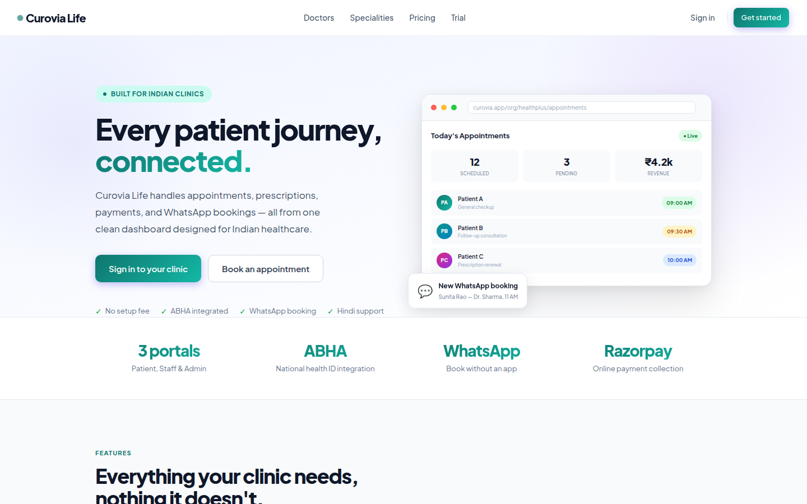
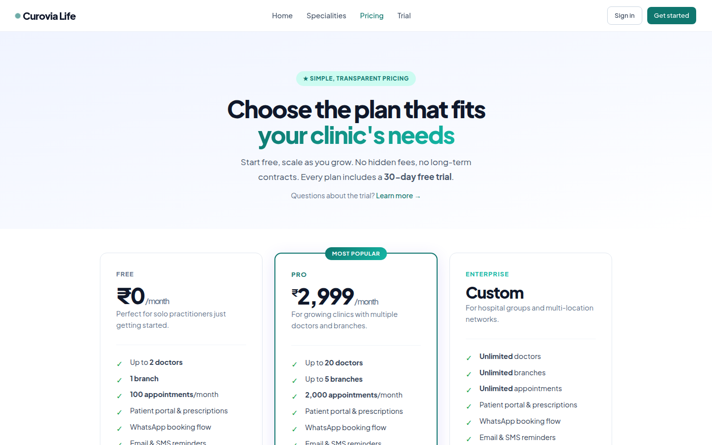
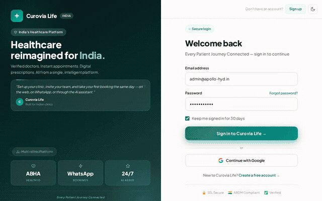

A multi-tenant clinic management SaaS for Indian healthcare — branded per-organisation portals, role-based staff access, billing, an AI chat assistant with RAG, and a WhatsApp booking flow in English and Hindi.
Overview
Curovia serves three distinct user types across separate namespaced portals — patients booking appointments, staff (doctors, receptionists, org admins) running the clinic day-to-day, and a super-admin platform layer managing every organisation. Each organisation gets its own branded login page, plan-gated feature set, and isolated data.
The screenshots below are from a real local instance seeded with realistic clinic data. The public marketing pages are captured directly from the live production site.
Architecture
An Organisation has many Branches. Staff belong to an org + branch via a StaffMembership that carries its own role — so a doctor who owns their clinic can be User.role = doctor globally but org_admin at their own membership.
| Tenant | Organisation — slug-identified, plan: free / pro / enterprise |
| Location | Branch — active / inactive |
| Access | StaffMembership — doctor / receptionist / org_admin / branch_admin |
| Portals | /patient/ · /org/:slug/ · /admin/ |
Live site
Captured directly from curovia.life — no login required.

Marketing homepage

Plan comparison (Free / Pro / Enterprise)
The app
Logged in as an org admin of a demo hospital chain on the Enterprise plan. The GIF below clicks through the dashboard, calendar, billing, and analytics — real data throughout.

Dashboard → calendar → billing → analytics
Engineering highlights
A doctor who owns their own clinic has User.role = doctor but org_admin at the membership level. Any query filtering "who is a doctor" by membership role instead of user role silently excludes them — found in one place, then found copy-pasted into 14 more. Fixed at the model layer so every caller benefits automatically.
PostgreSQL FK constraints are deferrable, so a missing dependent: option can pass the full test suite cleanly — the violation only fires at COMMIT, which a test's wrapping transaction never reaches. Found in production when an org with real bills couldn't be deleted.
Patient/doctor search was scoped to the searching staff member's own org memberships — always empty for a super admin, by design. Fixed with a special case for super admins, not a loosened permission model for everyone else.
Tech stack
| Framework | Ruby on Rails 8.1 |
| Database | PostgreSQL (multi-database) + pgvector |
| Frontend | Hotwire (Turbo + Stimulus), Tailwind CSS v4 |
| Auth | Devise + TOTP two-factor |
| AI / LLM | Groq Cloud + Ollama fallback, RAG via pgvector + Jina embeddings |
| Integrations | WhatsApp (Meta Cloud API), Razorpay, ABHA health ID |
| Deployment | Kamal 2 + Thruster, AWS EC2, Cloudflare |